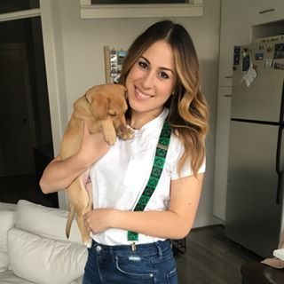

About Me
Hello, I'm Phoebe! Welcome to my portfolio page. I'm a DC native who just moved back after a decade of bouncing around a few US cities. I'm currently working as a Senior Associate of Brand Media at Capital One having spent my career in advertising.
Besides my new interest in coding, some of my favorite things include my rescued pup, Winnie, my rescued cat, Lulu, the Washington Capitals, and pizza. When I'm not at work or in class, you can find me at Spin or Pilates, checking out DC's awesome culinary and bar scene, or exploring my favorite museums. Looking forward to seeing where this new coding skill takes me!